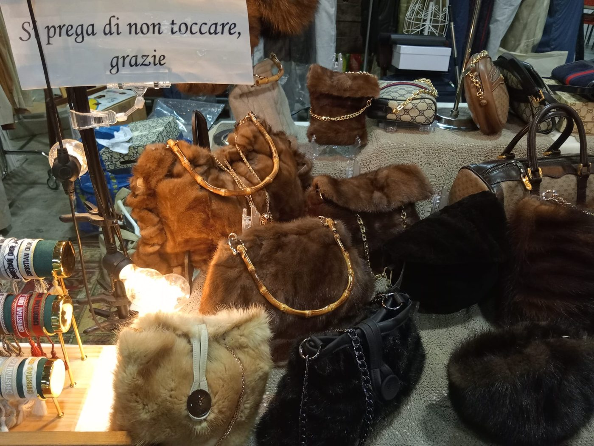

Il nostro modo
Scelti a mano,
uno alla volta
Ogni pezzo che trovi da Clu Vintage è stato scelto per il suo carattere: una pelliccia che cade bene, una firma che ha fatto la storia, un gilet sbiadito proprio al punto giusto. Li fotografiamo, li raccontiamo e li portiamo in fiera, dove puoi toccarli e provarli.
Non facciamo collezioni in serie: quando un pezzo va via, non torna. Per questo, se qualcosa ti piace, scrivici subito.
40pezzi online
12colori Carhartt
1esemplare per capo